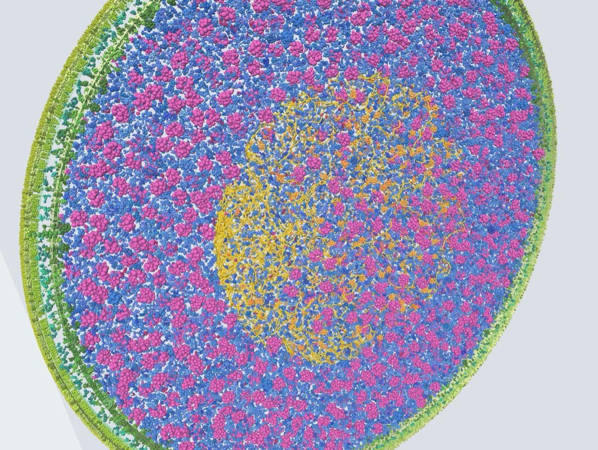

Virtual E. coliK-12
A whole bacterial cell at molecular scale. Thousands of proteins, each with its real 3D shape, packed at the copy numbers measured in living cells. Rotate it, zoom in, and click any molecule to see what it is.

Using the viewer
The viewer packs a slab through the middle of one fast-growing cell in a few seconds, right in your browser. Nothing is installed or uploaded. A desktop browser works best.
Look around
Drag to rotate, scroll or pinch to zoom. The faint outline shows the whole rod-shaped cell around the slab.
Identify molecules
Click any molecule for its gene, location, mass, copies per cell and a link to its PDB or AlphaFold structure.
Search
Type a gene or name, such as groEL, ribosome or porin, to show only matching molecules.
Peel back layers
Hide membranes, LPS, peptidoglycan, DNA or any compartment to see what's underneath.
Change the cell
Set cell width and slab thickness, colour by compartment or structure source, and re-pack for a new arrangement.
Use your own data
Load any ingredients.json made by the pipeline. The file is read on your computer and never uploaded.
How the cell is built
A five-step Python pipeline turns public databases into packing ingredients. Each ingredient is a cluster of spheres, about one per 12 residues, that approximates the molecule's shape for fast collision tests.
- Fetch the proteomeAbout 4,400 proteins from UniProt UP000000625, with genes, masses and compartments.
- Add abundancesCopies per cell from Li et al. 2014 synthesis rates, or from PaxDb.
- Pick structuresCurated assemblies first, then the best PDB entry, falling back to AlphaFold models.
- Download structuresmmCIF files from the PDB and AlphaFold DB.
- Coarse-grainCluster atoms into spheres, set oligomeric state, orient membrane proteins, write
ingredients.json.
Run it yourself with Python 3.9 or newer:
cd ecoli-vcell-data-0.1.1
python -m venv venv && source venv/bin/activate
pip install -r requirements.txt
./run_all.sh li2014_tableS1.xlsx \
--value-col "MOPS complete" --skiprows 1Then open the viewer and choose Load ingredients.json to see your cell. Full instructions are in the README.
Download ingredients.json (5.5 MB)Known gaps
- AlphaFold models are monomers, so proteins without an experimental structure lose their oligomeric state.
- Not yet included: mRNA, tRNA, individual lipids and metabolites. The viewer draws DNA and the envelope separately.
- Absolute totals: copy numbers from synthesis rates give more total protein than typical single-cell estimates.
- Homolog structures: assemblies taken from another species' PDB entry assume a stoichiometry of 1.
Data sources
- UniProt reference proteome of E. coli K-12 MG1655
- Li et al. (2014) Cell 157:624, absolute protein synthesis rates
- RCSB PDB and PDBe experimental structures
- AlphaFold DB predicted structures
- Rendered with three.js